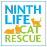

SEP 2019 - ONGOING
Partake in peer drop-in groups for individuals across the Halton region who struggle with mental health and substance use. Volunteered as a certified peer mentor for the Burlington TEACH group prior to its amalgamation with The Centre. Continue to serve the community by working with peers individually on a case by case basis, serving in suicide intervention when necessary. Assisted facilitators in person with set up and takedown of groups by arranging furniture and laying out resources.

OCT 2018 - JUN 2019
Volunteered with Ninth Life Cat Rescue in collaboration with PetSmart to maintain the wellness of the cats and screen potential owners for suitability of a pet.